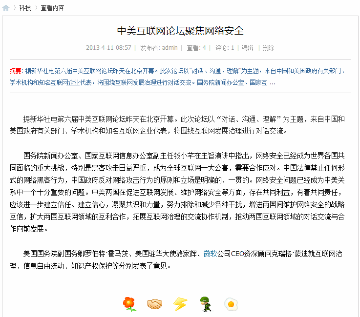
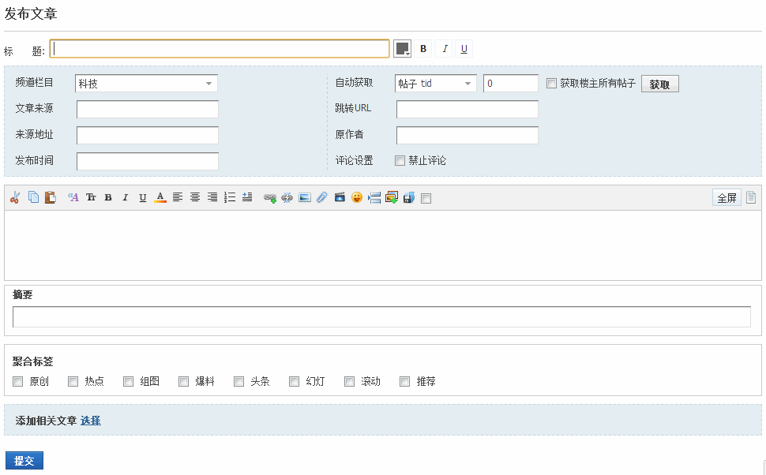
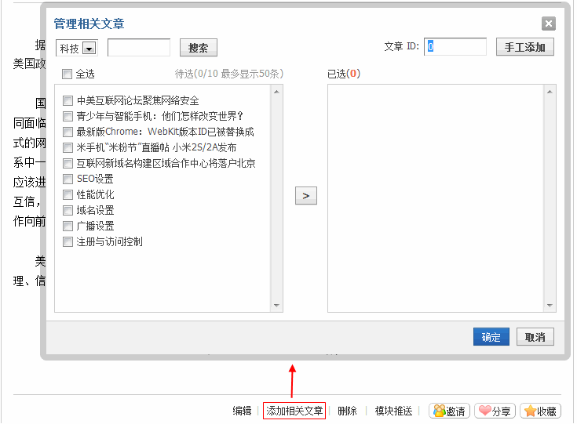
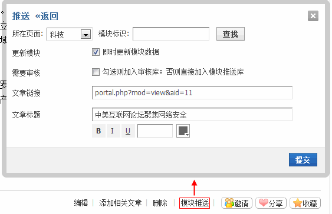

资讯
资讯是指用户及时获得的有价值的信息，包括帖子、日志，也可以是社区管理人员发布的新闻。下面我们以查看管理人员发布的新闻为例来看： 点击新闻标题，进入新闻内容页面：
用户可以查看文章的内容，系统提供了相关阅读来满足用户的深入阅读；同时系统提供了评论、表态动作以及邀请等元素增强互动
表态动作：系统提供了鲜花、握手、雷人、路过和鸡蛋五个表态动作（站长可以根据需求在后台增加或是修改），查看文章内容后，读者可以发表自己的见解，在登录状态下可以进行表态，选择一个态度点击后，将会给这个态度值加一，同时表态用户的头像和用户名将会显示在下方头像列表，鼠标滑过头像，会显示此用户的态度；
评论：系统提供给了评论功能，用户可以对文章进行评论，输入评论内容，或是引用他人的评论内容，评论即可，评论后，评论将显示在文章下方；
邀请：当看到精彩文章想要好友也来阅读时，可以邀请好友来阅读此文章，点击邀请好友，选择要邀请的好友，发送邀请，好友将会收到一封查看这篇文章的邀请提醒
在资讯页面，系统提供给了发布文章、添加相关文章、模块推送、编辑、删除等相关操作来方便站长对资讯的管理。下边我们分别来看：
发布文章：点击发布文章，进入发布文章的页面，填写标题、频道栏目、设置文章来源、发布时间、原作者等，填写文章内容并编辑，然后填写摘要、选择合适的聚合标签，若有相关文章，可以添加相关，编辑完成后，提交即可。
添加相关文章：即添加和这篇文章内容相近的同类文章，点击添加相关文章，将会弹出管理相关文章界面，从文章列表中选择要添加的和这篇文章一类的文章，然后给其进行排序，提交即可，相关文章的标题将会出现在相关阅读中。
模块推送：将文章推送到模块，点击模块推送，弹出选择模块的页面，选择模块，然后修改其他属性提交即可。
